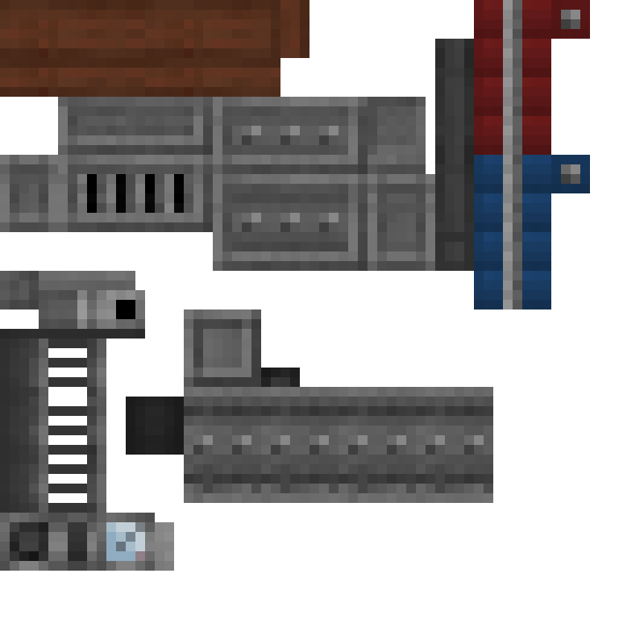
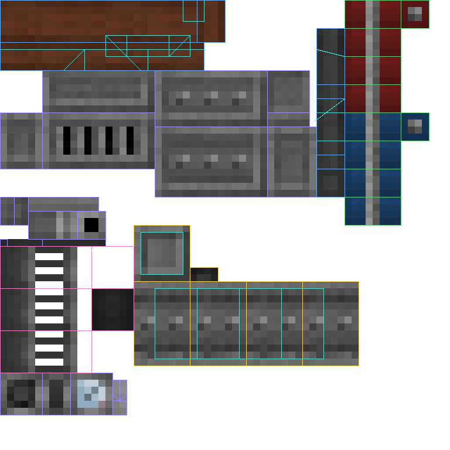
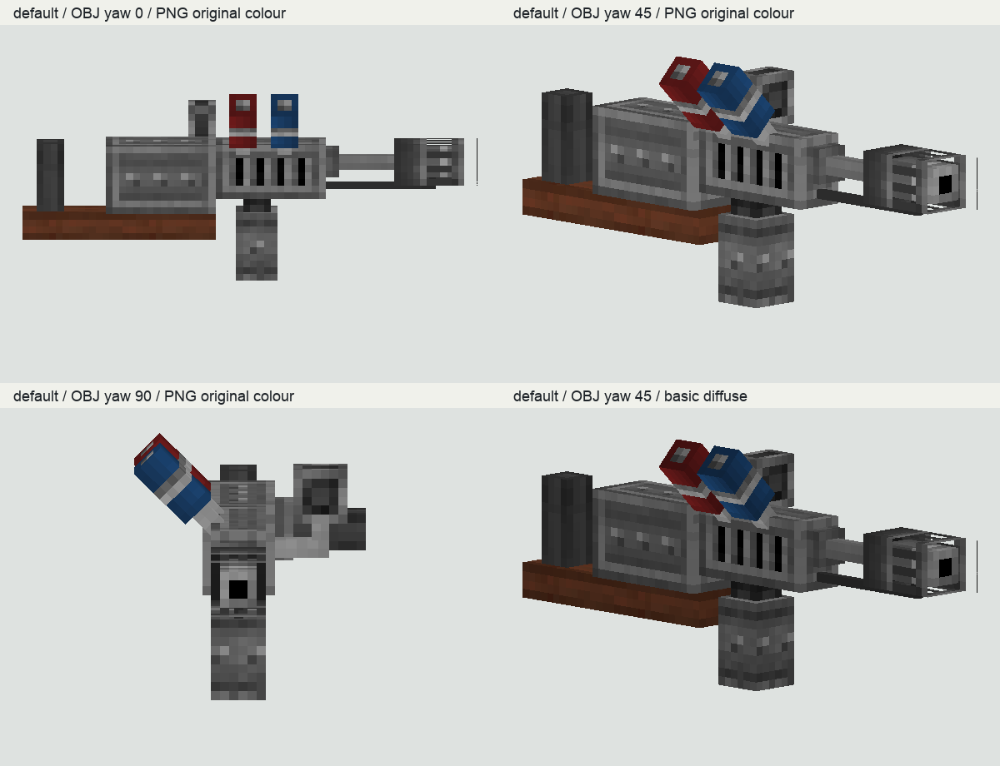
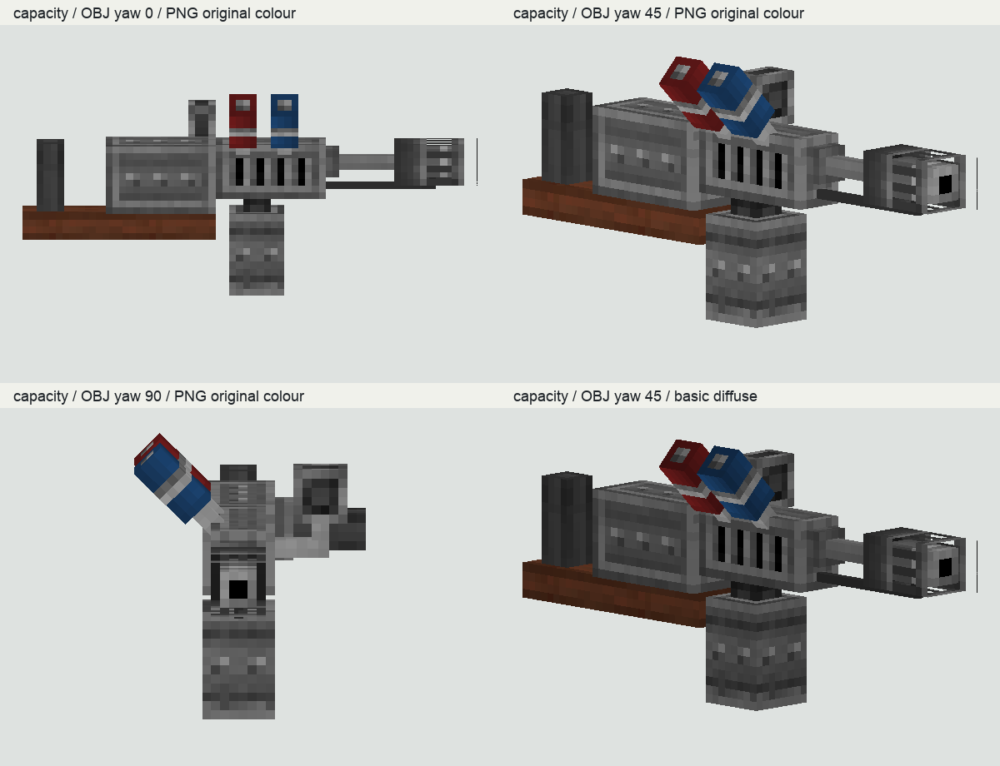
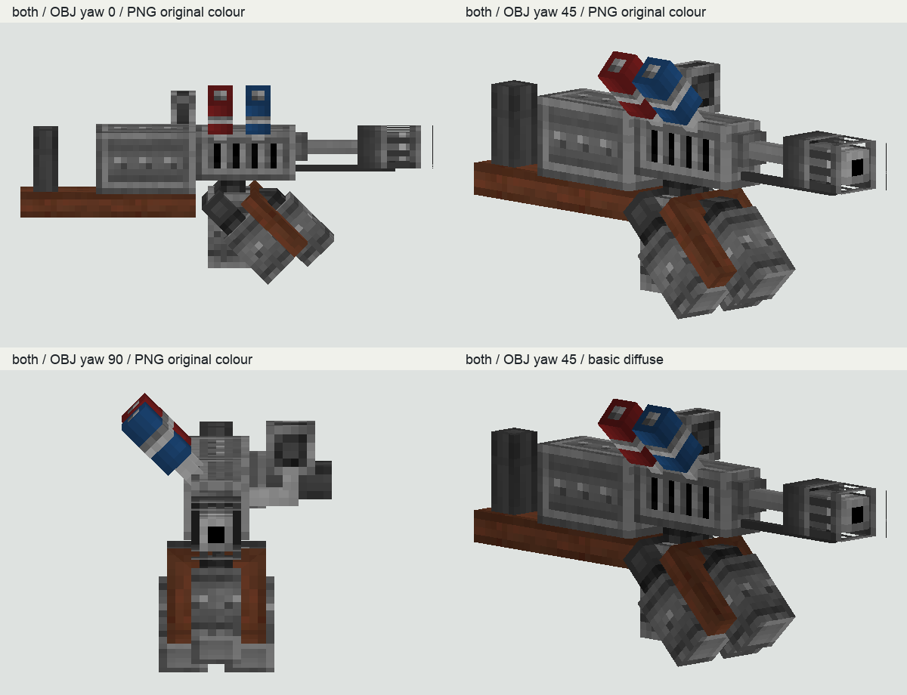
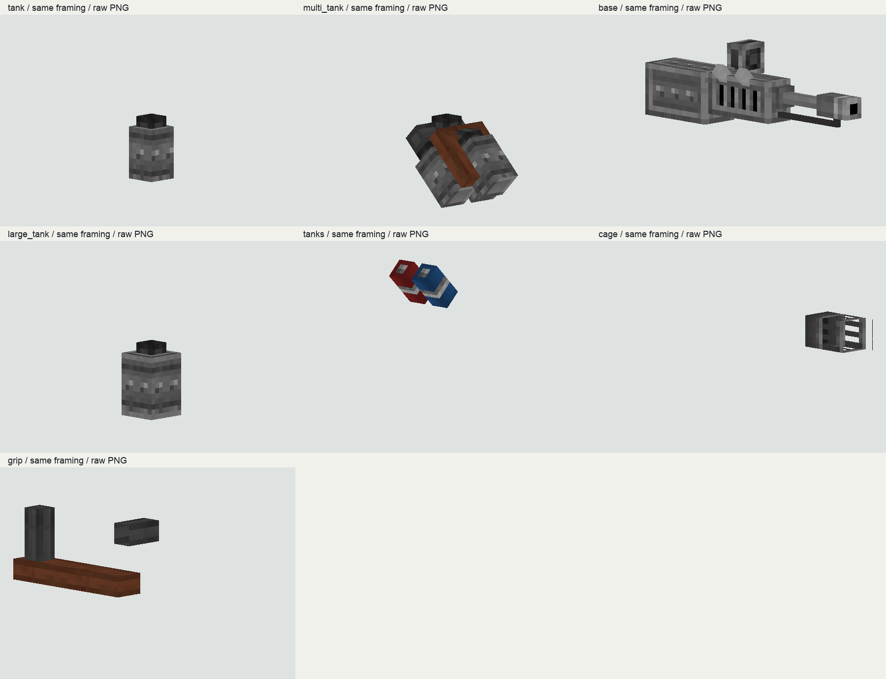

实际固定OBJ、MTL、64×64PNG同时检查；272顶点、179个四边形、7组共用一个材质。PNG只有0/255透明度，透明像素不能当作黑色材质缺口。
数量只是同一资源的结构统计；不新增生物或武器参考计数。外部作者研究资产，非Dynasty新作品。离线正交预览，不是游戏截图。不新增参考计数，不修改生产资源。
实际固定OBJ、MTL、64×64PNG同时检查；272顶点、179个四边形、7组共用一个材质。PNG只有0/255透明度，透明像素不能当作黑色材质缺口。
数量只是同一资源的结构统计；不新增生物或武器参考计数。贴图原图和12倍最近邻图已看：深灰金属大面、通风暗缝、红蓝容器及棕色握持部件分工明确，亮部集中在边缘转折、带箍与接口。
该参考也有重复边框/铆接，不能声称它完全没有；借鉴用途分区与主次，不复制工业题材或原像素。MTL只指向chemthrower贴图，没有另写Kd；默认回调不替换贴图/原色。材质颜色和sprite消费者会优先考虑回调及可选Shader，因此基础贴图检查与改装Shader显示必须区分。
没有运行Shader或最终atlas；不把软件原色图当所有游戏显示情形。非absoluteUV路径在PolygonUtils明确使用getU(16*u)、getV(16*(1-v))；离线UV按此翻转V，实际200个UV坐标均在0..1，叠加图已逐组查看。
源码与离线采样对应，不等同执行了ModelSplitter解析、图集烘焙和GPU插值。可见性回调始终显示base/grip/cage/tanks；容量和多罐仅各追加large_tank/multi_tank，最后tank仍为true。默认111面、容量121面、多罐169面、全开179面。
不能把基础tank误读成升级时必隐藏；离线按回调集合筛组，没有假定独立新物品。四种可见组合都用相同全模型取景，另给7组拆解图。观察到外壳、带箍与容器有连续组织；色块不能仅按每面平均色代替。
原始OBJ正交yaw0/45/90，不是Boss前侧背，也没有玩家手臂、display矩阵或真实光照。物品JSON为动态IE OBJ、cutout层，左右手和一三人称有各自display变换；Chemthrower回调的额外姿态仅给Bulwark第三人称，普通玩家不能直接套用。
这批只看静态原OBJ；持物矩阵组合与实际持握仍待验证。IEOBJLoader先加载、quadify并重算零法线，SpecificIEOBJModel再按可见组、材质、回调和pass烘焙；自己的三角化软件预览只用于纹理观察。
未运行第三方parser或游戏烘焙；前端细线等差异保留为软件/源模型待核，不指认为游戏缺陷。




